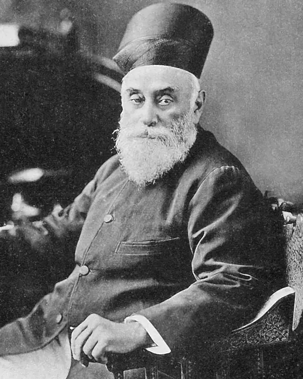
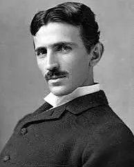
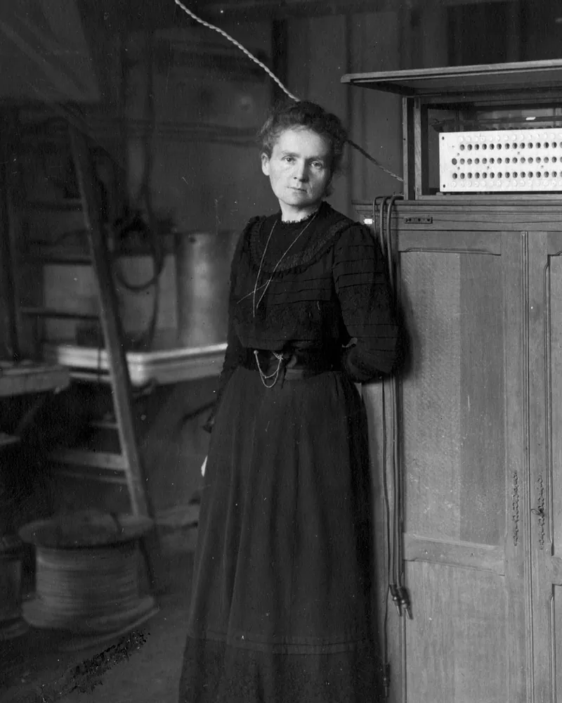
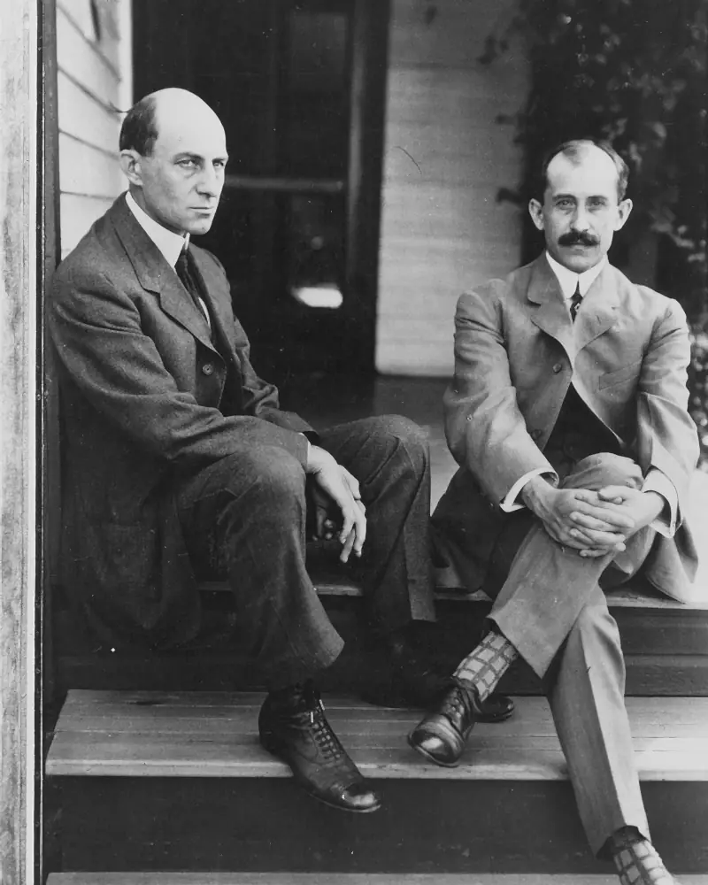
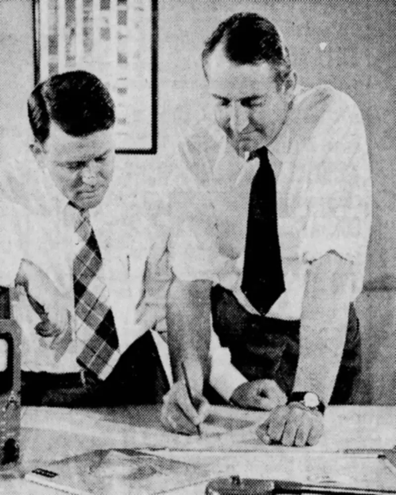
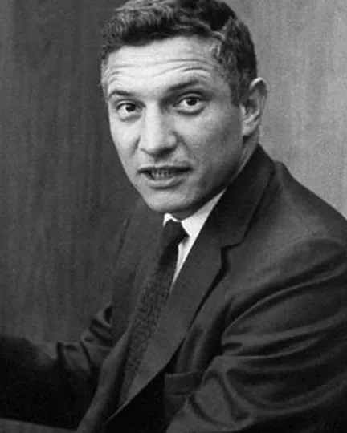
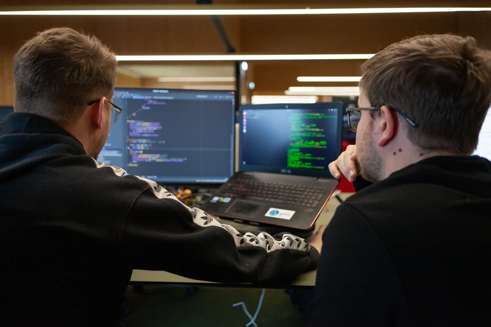
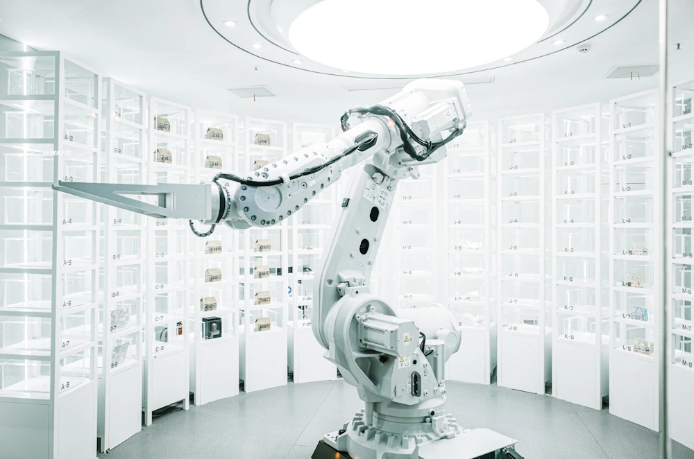

Where tomorrow’s industries find their founders.
Builders’ Quorum (BQ) turns a university’s most ambitious students into founders. We curate the investors, mentors, engineers and problems around them, and stay with the strongest teams from a first problem to a first company.
Builders’ Quorum isn’t another case competition or speaker series. It is the layer between exposure and venture creation, where students stay inside a sector long enough to build something real.
Who is a builder
The men and women who built our world had little in common. Different centuries, different countries, different problems. Except one thing. An obsession to build.
-

Jamsetji TataFounded the Tata group 1868 -

Nikola TeslaAlternating-current motor 1888 -

Marie CurieDiscovered radium 1898 -

Wilbur and Orville WrightFirst powered flight 1903 -

Bill Hewlett and David PackardStarted HP in a garage 1939 -
Grace HopperWrote the first compiler 1952 -

Robert NoyceThe integrated circuit 1959 -
Margaret HamiltonApollo flight software 1969 -
Steve JobsCo-founded Apple 1976 -
Morris ChangFounded TSMC 1987
Every great company began with one stubborn person.
Before the headquarters and the headlines, there was someone with a half-working prototype and a conviction no one else shared. The world calls it vision afterwards. At the start it just looks like obsession.
Builders keep going through the long stretch where nothing works and nobody’s watching. We build the room where they find each other.
What we do
Our work is curation.
Ambitious students are everywhere. The people and problems that turn them into founders are much harder to find. For each university, we choose them, bring them to its students and keep them there.
Investors and mentors
We choose investors, mentors, founders and engineers for each university’s students and the sectors they work in.
Live problems
Students work on real problems from founders, enterprises and researchers, framed with the people who own them.
Pods and sprints
Management, engineering and design students build as one pod, with the same mentors from start to finish.
Hackathons and flagship events
We design them with technology enterprises, around problems those enterprises care about.
Demo Night
The strongest teams present to angels, pre-seed funds and operators from the network.
A path to a company
BQ Fellows get one-to-one time with founders and are introduced to investors when they are ready.

Frontiers
Where the next industries are being built.
Every track is taught through how its sector makes money and where it is stuck, as well as how its technology works.
- AI and cloud
- Robotics
- Semiconductors
- Space tech
- Advanced materials
- Energy
- Fintech
- Real estate and proptech
- Food and agri-tech

The journey
Access is earned.
Every student starts as an Explorer. What they build and how consistently they show up decide how far they go.
-
01
Explorer
Come to chapter sessions, meet practitioners and find the sector that holds your attention.
-
02
Builder
Join a pod for a full sprint and ship a working prototype.
-
03
BQ Fellow By selection
The strongest builders from each cohort, chosen by a panel of founders and operators. Fellows get one-to-one time with them and a Demo Night slot.
-
04
Founder
Take the work further with a team, a problem worth years of your time and people who can help.
You can’t apply to be a Fellow. If a cohort doesn’t produce one, we don’t name one.
Why BQ
Built to last past the first event.
Most programmes book a speaker and fill a hall. BQ is built on four things that take years to put together.
- A network we curateFor each university we choose the investors, mentors and engineers who fit its students, and they stay with the same teams for a whole sprint.
- Communities we runWe run practitioner communities of more than 1,000 AI builders and researchers, and we convene engineers, scientists and investors in small, invitation-only sessions. Our mentors, problems and investors come from there.
- Continuity by designPods, fixed-length sprints, mentor follow-ups and Demo Night keep students building between sessions, which is where most programmes lose them.
- A network that compoundsEvery cohort adds Fellows, mentors and partner enterprises, and every new cohort can reach all of them.
Ways in
Where do you fit?
Universities
Give your students a path from a first problem to a first company. It starts with a pilot.
For universitiesEnterprises
Run a hackathon, bring a live problem, lend your engineers or meet the builders you want to hire.
For enterprisesInvestors
See the strongest teams first, mentor a pod or judge Demo Night.
For investorsResearchers and engineers
Join the people who set the problems and mentor the teams. Membership is by invitation.
The networkPilot first
Every chapter starts with a pilot.
We listen first, run one sprint with a committed group of your students and share what happened, good or bad. Then you decide whether to continue.
FAQ
Questions
What is Builders’ Quorum?
Builders’ Quorum (BQ) is an independent venture-creation ecosystem. It works with universities to turn their most ambitious students into founders. For each university, BQ curates the investors, mentors, engineers and live problems around its students, runs sprints, hackathons and Demo Night with them, and stays with the strongest teams from a first problem to a first company.
Who is BQ for?
Universities and institutions that want their students to build and found companies, and the students in them. Investors, mentors, founders, engineers, researchers and enterprises make up the network around them.
How does BQ work with a university?
It starts with a pilot. We listen first, shape a chapter around your students and the sectors they care about, run a pilot sprint and review the results with you before anything else is agreed. There are no fixed session counts and no long contracts up front.
What do students get?
A place in a pod working on a live problem, mentors who build, hands-on Build Labs, and hackathons and flagship events with technology enterprises. The strongest builders become BQ Fellows, present at Demo Night and are introduced to investors when they are ready.
How is BQ different from a hackathon, case competition or speaker series?
Those last a day or an evening. BQ stays with students over weeks and across cohorts, with the same pod and the same mentors, so they see how a sector actually works and leave with something real. Hackathons and events are part of a chapter rather than the whole of it.
How are BQ Fellows chosen?
You can’t apply to be a Fellow. A panel of founders and operators chooses Fellows from inside each cohort, based on what each person built, how consistently they showed up and what their pod says about working with them. If a cohort doesn’t produce a Fellow, we don’t name one.
Where does BQ work?
With a small number of universities at a time, wherever their students are. The network works across borders, online and in person.
How can enterprises, investors and experts get involved?
Enterprises run hackathons with us, bring live problems, lend engineers and meet builders they may hire. Angels and pre-seed funds see the strongest teams first, and later-stage investors mentor and judge. Researchers, engineers and founders join the network by invitation.
Bring BQ to your university.
Tell us about your students and what you have tried. We will come back with a pilot shaped around them.